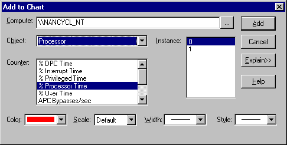

|
| ||
|
| ||
By Nancy Winnick Cluts
December 14, 1998
Contents
What Is WCAT?
How to Set up WCAT
Running WCAT for the First Time
Analyzing the Results
Using and Logging Performance Counters
Scripting Your Own WCAT Tests
Using IIS Extended Log File to Find Runtime Errors
Maintaining Session Data Using WCAT
Using WCAT to Simulate POSTed Data
New WCAT Features and Fixes
Summary
The Microsoft Web Capacity Analysis Tool (WCAT) is an essential tool for testing your client-server network configurations. The tool is used to simulate a variety of workload scenarios on your network, allowing you to determine the best configuration for your server and network. WCAT is designed specifically for evaluating Internet servers running Microsoft Windows NT Server and Microsoft Internet Information Server (IIS), but you can use the tool for nearly all types of Web servers. One limitation: ASP and ISAPI don't run on UNIX servers, and therefore can't be tested in that environment. One of the best things about this tool is the price: it's available as a free download from http://www.microsoft.com/workshop/server/toolbox/wcat.asp. This download includes detailed documentation that is quite easy to read and understand--I recommend doing this if you are contemplating using WCAT.
WCAT provides more than 40 ready-to-run workload simulations that enable you to test the download of various-sized pages or content from the server at different levels of connectivity. See the documentation for an exhaustive list of these tests. You can test your server's performance using ASP, Internet Server Application Programming Interface (ISAPI) extensions and Common Gateway Interface (CGI) applications. This ability is useful even if you are currently not using these extensions because you can test your extensions first before deploying. In addition, WCAT tests run simulations to test responsiveness on the server for lower-level communications including Secure Sockets Layer (SSL) versions 2.0 and 3.0, Private Communications Technology (PCT) 1.0 encryption, and Hypertext Transport Protocol (HTTP) keep-alives (which allow a connection to be maintained after the initial request is completed).
If you require more extensive testing, you can create your own custom simulations and run them using WCAT. You can even test servers that are connected to more than one network and test the use of cookies for personalization. If you are as big of a techno-geek as I am, you might use this for your home networks.
By now you are probably just itching to take WCAT out for a spin, so let's take a look at the typical setup you will need to start your testing. You will need four components to run a WCAT test: a server, a client, a controller, and a network. As you are running your test, the controller and client run different WCAT programs while the server responds to the request with WCAT files (which files depend upon the simulation you are running).
The server is responsible for responding to the requests for connections, managing connections, and receiving, processing, and responding to requests for Web content (in other words, Web pages). In order to run the WCAT tests, you must run a functioning Web server. If you want to install all of the static file tests, you will need 220 MB of free space on your hard disk. The ASP tests require less than 100 KB; however, you don't need to install anything on your server except the specific content you want to test. You must also have TCP/IP installed and bound to the network adapter.
On Windows NT, when you set up the server component, the setup program will automatically copy the necessary files to the appropriate place. If you are not running Windows NT, you will need to do some of this work yourself. Install the server files and copy the directories that start with perfsize from the wwwroot directory on your Windows NT server to the server you will be using. Don't forget to copy the files that reside within those directories, too.
The client machine is responsible for making the server work really hard. To be more specific, in a WCAT test, you can configure the client at a variety of levels by specifying the number of client browsers in the test; the size, type, and rate of client requests; how often requests are sent and which pages are requested; and the duration of the test. You don't have to have one client machine for each client you want to test. Each WCAT client test is run in its own process, so you have the ability to run more than one client on a client machine. These are known as virtual clients. Each client machine can run up to 200 virtual clients, allowing you to test a dizzying number of connections with fewer resources (Note that this is only an approximation of testing with 200 physical clients. 200 physical clients will place more load on the server).
Be aware that you need to monitor the memory use on the computer. If the client is using more than its physical memory (in other words, it's swapping like crazy), you will experience a reduction in speed and should reduce the number of virtual clients. In general, clients rarely have a problem unless you're running on really feeble hardware).
The client machine(s) must have Windows NT Server or Windows NT Workstation (version 4.0) installed, 1 MB of free space on the hard disk, and TCP/IP installed and bound to the network adapter.
The WCAT controller is responsible for administering the WCAT tests. This separates the actual testing that is being done on the other machines from any overhead of test management. The controller uses input files that specify how to run the tests and, when the tests are finished, writes the results to output files.
You need to include three input files on your controller to run the prepared tests. If you want to customize the testing process, you can provide your own versions of these files instead. You will need to include a configuration file to specify the number of clients as well as virtual clients and the duration of the test. The configuration file has the .cfg extension and is named for the test you are running. So, if your test is named test1, your configuration file would be named test1.cfg. Another input file you will need is your script file. This file contains the names of the Web pages that will be requested from the server. Your script file has the .scr extension and, given the previous example, your script file would be named test1.scr. The third required input file is the distribution file which specifies the frequency of client requests. This input file, with the .dst extension, would be named test1.dst in the above example.
There is an additional, optional input file, known as the performance counter file, that you can also use on the controller to monitor performance counters. This file has the .pfc extension and, in the example above, the file you specified would be named test1.pfc.
Now that you have your input files, let's move on to the output files. The controller generates a log file that contains the statistics it has gathered throughout the test. This log file has the extension .log, and is a comma-delimited text file that can be edited using any text editor or used as input to a spreadsheet or database. If you specified a performance counter file as input, the controller will also generate a performance counter results file (with the .prf extension).
The controller machine must have Windows NT Server or Windows NT Workstation (version 4.0) installed, 10 MB of free space on the hard disk, and TCP/IP installed and bound to the network adapter.
For the purposes of WCAT, a network is simply the communications link between your client machine(s), controller, and server. The network must be using TCP/IP, and it is recommended that the network bandwidth be 100 megabits per second. When you set up your test, be sure that the machines connected to your network are all configured correctly so that you will know that any performance problems aren't caused by improper installation.
To determine the maximum possible performance of your Web application, the following is recommended:
If you want to test the performance of your application under an average load, you should set some performance goals (pages loaded per second, percentage of CPU used, and response time) and try to meet those goals.
If stress testing is your goal, you may or may not need private networks and lots of clients. Putting your application under moderate load is often enough to expose bugs; running the controller and a client on the server will suffice for that. It is certainly more effective than refreshing the page in a single browser. If you want to stress test at a high level, using a private network and lots of clients is beneficial. In addition, running stress tests on a multi-processor machine is a great way of finding threading bugs.
After using the setup program to install the files you will need on each of your computers, you need to configure the client and controller computers the first time you want to run WCAT. You need to know the IP addresses of both of these machines. You can get that information by using the TCP/IP ping command line utility, which responds with a line that contains four numbers within square brackets (for example, [11.1.38.2]). These numbers represent the IP address of the machine on the network.
Once you have the IP addresses, you can configure your client and controller. The WCAT controller is configured at a commond prompt. Simply change to the directory that contains the controller (by default, this is \webctrl, so you would type cd \webctrl) and type config with either the IP address or the computer name. Use the computer name if you will be testing multiple networks.
Configuring the client is similar to configuring the controller. Once again, go to a command prompt, change to the directory where the client resides and type config controller-name IP-address (controller-name is the controller machine's name and IP-address refers to the client machine).
There are five major steps involved in running WCAT.
Step 1: Start the WCAT client(s), controller, and server
Start the WCAT client on your client machine(s) by going to a command prompt, changing to the client directory, and typing client (this is a batch file that will run the program wcclient.exe). The program will attempt to connect to the controller. If it doesn't connect, the program will try again ten seconds later and will continue to try every ten seconds until you terminate wcclient.exe. To terminate wcclient.exe, at the command prompt, type CTRL+C.
Next, start the WCAT controller program (wcctl.exe) on your controller specifying the test you want to run. Go to a command prompt, change to your controller directory, and type run testname [switches] (where testname is the name of the test you are running and switches are your options). Always use the -a ServerIP and -n ServerName switches when you run the controller programs. The -a switch is used to specify the server(s) to test and the -n switch specifies the server name. A full list of all possible switches and their usage can be found in the WCAT documentation.
Finally, start IIS and HTTP service on your server.
Step 2: Warm-up
During the warm-up period, the controller sends instructions to the client machine(s) and the client(s) begin sending requests to the server. Output is not collected during the warm-up period because the server is typically responding at a slower rate than normal (frequently-used pages, objects, and instructions have not yet been cached by the processor).
Step 3: Experiment
During the experimental period, the controller instructs the client machine(s) to send specific requests to the server, and the server responds. Statistics are gathered and status messages may be sent to the client machines. The controller monitors the duration of the test. This is the time when WCAT is determining your server's performance based on the workloads simulated. If you have specified that you want to monitor performance counters, the controller will monitor these during the experimental period.
Step 4: Cool-down
After all that work, it's time to cool down (you wouldn't want your server to get a cramp, now would you?). During the cool-down period, the controller instructs the client machine(s) to stop sending requests. The client(s) finish their transactions and, although the client(s) continue to gather statistical data, this data is not saved for output; cool-down is not indicative of a true workload, so these statistics are not useful.
Step 5: Reporting
The client(s) send the data gathered to the controller during the reporting period. Once all data has been sent, the controller closes the client connections. Be aware that WCAT is still running on your client(s), so they will revert to their initial configuration and attempt to connect to the controller. The data that is collected by the controller is written to a log file. A line of text is written for each client containing the total number of pages read, the average number of pages read per second, and the actual number of pages read by each client. At this time, if you specified that you wanted to monitor performance counters, this data will be written to the performance results file.
The information written out to the log file contains a file header, results, performance counters (if you specified that you wanted these included ), file, and class statistics. The header includes general information about the test, including the date and time the test was run, the input and output files used, and the duration. Check out the WCAT documentation for a full explanation of all header fields and their syntax, as well as a sample.
There are many details written to the .log file, the most interesting of which is probably the "Pages Read" table The first numeric column is the total number of pages read by all of the client machines. The second is the rate of pages per second seen by the first client machine. The third is the total number of pages seen by the first client machine. If you have more clients, you will see the rate and total numbers for each machine in subsequent columns.
The results section of the log file is a table summarizing the data collected during the test. The data collected includes the number of pages requested, response time, connections, and any errors that may have been encountered. The format of the table and the syntax for each of the columns can be found in the WCAT documentation.
If you specified that you wanted to monitor performance counters, a section of the WCAT log details this. This data is also represented by a table (do you see a pattern here?) consisting of the average value for each counter per page.
The files section of the log consists of a table containing the number of files requested and received by clients during the test.
The final section of the log is the class statistics section, which contains the data representing the retrieval rates of pages on the client. This includes the number of pages successfully retrieved, the error rate, and the rate at which a particular type of page (in other words, class of page) was requested. You can use this data to determine which types of pages are requested the most.
As mentioned earlier, you can optionally choose to use performance counters with WCAT on your Windows NT-based servers. With performance counters, you can measure the usage of your processors, physical memory, disk subsystem, and memory cache, as well as measuring the performance of services used (for example, IIS). In order to use performance counters, you need to use the -p switch when running your controller, and you need to supply a file with the .pfc extension that specifies the counters that you would like to monitor. By default, this file is located in the \Scripts directory on the WCAT controller.
A sample input file--sample.pfc--for performance counters is installed with WCAT in the \Scripts directory of the WCAT controller. Each counter to be monitored is listed on a line by itself, left-aligned with no tabs. Comments can be included on a line by themselves by placing a pound sign (#) at the beginning of the line. The limit is 50 counters per file. The syntax of a line in your .pfc file is object(instance)\counter. Object is the name of the item that you want to monitor, such as process. The instance is the name of the particular instantiation of the object, and the counter is the actual property of the object that you want to monitor. To monitor the processor time used by the Internet Information Server process, Inetinfo, you would make the following entry in your .pfc file. In this example, Processor is the object, inetinfo is the instance and % Processor Time is the counter.
Processor(inetinfo)\% Processor Time
In order to determine the possible objects you can monitor, run the Performance Monitor utility (perfmon.exe at a command prompt) and choose "Add to Chart" from the Edit menu. You will be prompted with a dialog box that looks like this:

In this dialog box, you can choose the object from the drop-down box as well as the possible instance and counter. Click the Explain button to get a description of the meaning of each counter.
The following table lists some counters that may be of interest:
| Object | Counter | Comment |
| Active Server Pages | Memory Allocated | |
| Requests/sec | The rate at which ASP is satisfying requests | |
| Request Execution Time | How long on average a request takes to execute | |
| Request Wait Time | How long on average a request sits in the queue before being executed | |
| Requests Failed Total | ||
| Requests Queued | ||
| Requests Rejected | ||
| Sessions Current | ||
| Process(inetinfo) | % Processor Time | |
| % Privileged Time | ||
| % User Time | ||
| Private Bytes | Total memory used by this process. If this grows indefinitely, something, somewhere (such as an ISAPI or ASP component) is leaking. | |
| Working Set | ||
| Thread Count | ||
| Internet Information Services Global | Cache Hits % | |
| Memory | Available Bytes | |
| Page Faults/sec | ||
| Web Service(_Total) | Bytes Received/sec | |
| Bytes Sent/sec | ||
| Current Anonymous Users | ||
| Current NonAnonymous Users | ||
| Current Connections | ||
| System | % Total Processor Time | |
| Context Switches/sec | ||
| System Calls/sec | ||
| Processor(0) (each processor) | DPC Rate | |
| Interrupts/sec | ||
| DPCs Queued/sec |
The results from the performance counters are written to a special results file, testname.prf (where testname is the name of the test). This is a text file separated by commas so you can read it with any standard text editor or use it for input into a spreadsheet or database. This file cannot, however, be read directly by PerfMon. This file contains header information (number of counters, machine name, and start time to name a few), column headings, and a table containing the performance data collected. Refer to the WCAT documentation for the complete syntax and usage of this file.
You can customize the scenarios run by WCAT by specifying different command-line switches, changing the configuration of your server and client machines, using your own ASP, ISAPI, or CGI scripts and altering the input files for the client and controller. In the previous section, I talked about the ability to alter the performance counter file. You can also alter the configuration (.cfg), script (.scr), and distribution (.dst) files to suit your needs.
The configuration file is located on the controller in the \webctrl directory by default. This file contains information including the size of the buffer used in the test, number of client machines to use, number of threads to use, and the duration of the test.
The script file can be altered to determine what scripts you run for your tests. In this file, you could specify the particular ASP that you would like to test, as well as ISAPI and CGI extensions. Following is a sample script file from the WCAT documentation.
# ######################################################################
#
# Test script file for WCAT
#
# ######################################################################
# Format of Script Specification:
#
# ClassId Operation Files
# Note: Operation Strings are case insensitive
#
# Plaza Welcome page =>
NEW TRANSACTION
classId = 1
NEW REQUEST HTTP
Verb = "GET"
URL = "/scripts/welcome.py"
# Click Repeat Shopper => Plaza Lobby
NEW TRANSACTION
classId = 2
NEW REQUEST HTTP
Verb = "GET"
URL = "/prd.i/pgen/plaza/JQ04Q9JF66SH2JS700Q79TREBNBGAU1M/plaza1.html"
# Click AG => AG Lobby
NEW TRANSACTION
classId = 3
NEW REQUEST HTTP
Verb = "GET"
URL = "/prd.i/pgen/ag/JQ04Q9JF66SH2JS700Q79TREBNBGAU1M/lobby.html"
# Click Big Picture
NEW TRANSACTION
classId = 4
NEW REQUEST HTTP
Verb = "GET"
URL = "/prd.i/pgen/ag/JQ04Q9JF66SH2JS700Q79TREBNBGAU1M/ag_bigpicture.html"
The distribution file is used to set the percentage of time used for each transaction. If you customize your script file, you will also need to use a customized distribution file for the test.
In addition to using WCAT, you may also want to use the IIS extended logging capabilities to find errors in your ASP. You can turn on URI_Query extended logging to log ASP failures. This is not turned on by default. Turning it on is tricky, so here are the steps:
If you want to use WCAT while maintaining ASP session data, you can take advantage of cookies. You can do this by adding a line to the top of your script (.scr) test file such as:
Set Cookie="<CookieName>"
It doesn't really matter what you set the cookie to; only that you set the cookie. By setting a cookie, each virtual client that WCAT creates will have its own ASPSESSIONID cookie, enabling the ability to maintain session state. This means that WCAT will maintain a persistent cookie collection for each virtual user. To clear the value of a specific cookie, the following script code can be used:
NEW REQUEST CLEAR_COOKIE Set Cookie = "<cookie to clear>"
You can issue multiple CLEAR_COOKIE and Set Cookie directives in your script to control cookie lifetime. The only way to compose arbitrary cookie requests is to hard-code the cookie in a Set RequestHeader directive. This may be useful for testing custom applications which do not use the ASP session state.
In a "real" Web application, you are likely to find the need to post data of some sort to a URL. The Web Publishing Programmer's Reference can give you the details about the Web Publishing API that you might need to use. When using WCAT, you can simulate the POSTing of data to a specified URL. To post data to an ASP form, use the following:
In the newest version of WCAT, several features have been added and bug fixes made. New features and fixes include the following:
WCAT is just one tool that is available to monitor your IIS servers. INetMonitor is a tool that is used for capacity planning, load monitoring, hardware configuration, and simulation. It's shipped with the Microsoft BackOffice Resource Kit (Second Edition), available through Microsoft Press  . You should read Tom Moran's article, "Know Your Limit: The Capacity Planning Tool Nobody Knows," on the MSDN Online Web Workshop Web site for the skinny on INetMonitor. In addition, remember to check the Web Workshop server area for information about server technologies; specifically, take a look at the IIS section.
. You should read Tom Moran's article, "Know Your Limit: The Capacity Planning Tool Nobody Knows," on the MSDN Online Web Workshop Web site for the skinny on INetMonitor. In addition, remember to check the Web Workshop server area for information about server technologies; specifically, take a look at the IIS section.
Did you find this material useful? Gripes? Compliments? Suggestions for other articles? Write us!
© 1999 Microsoft Corporation. All rights reserved. Terms of use.